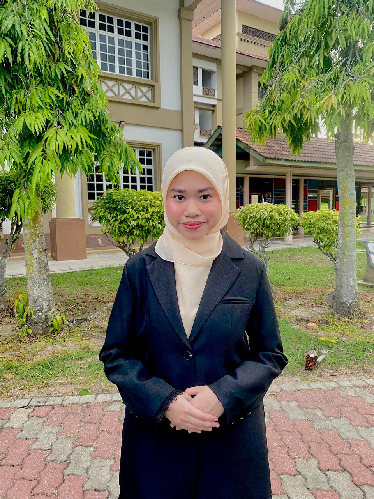
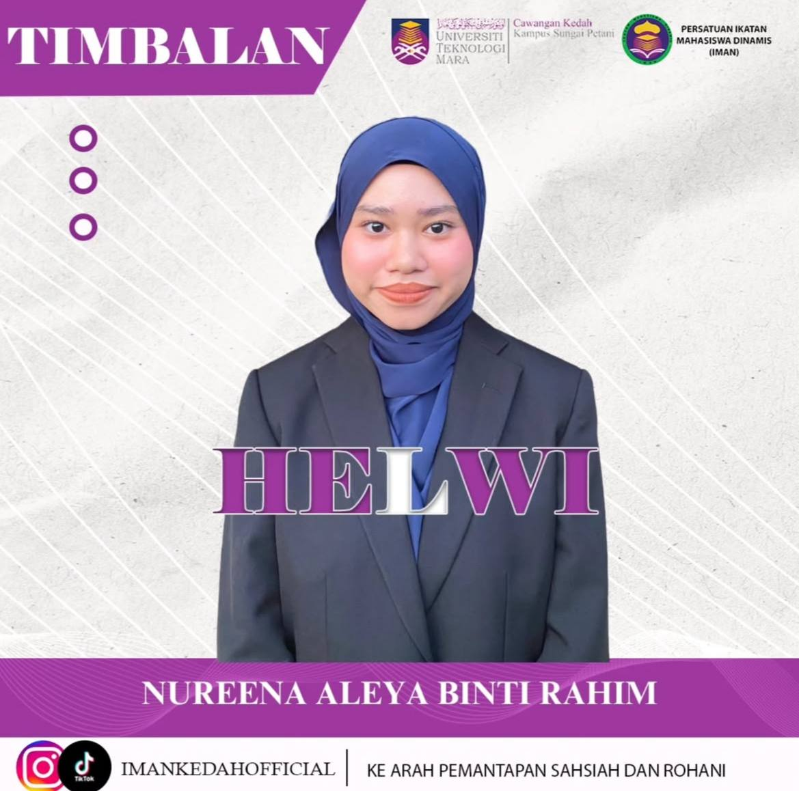
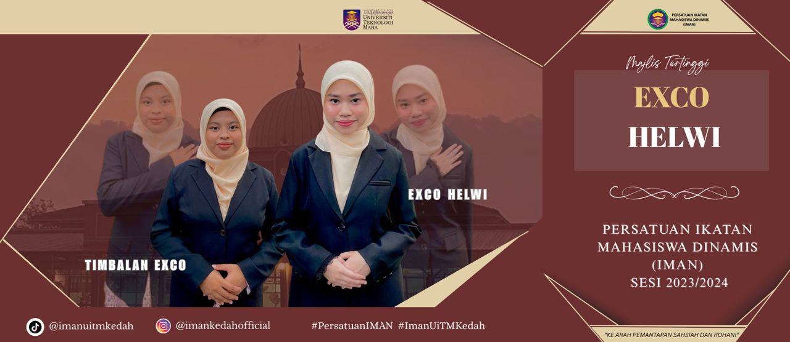
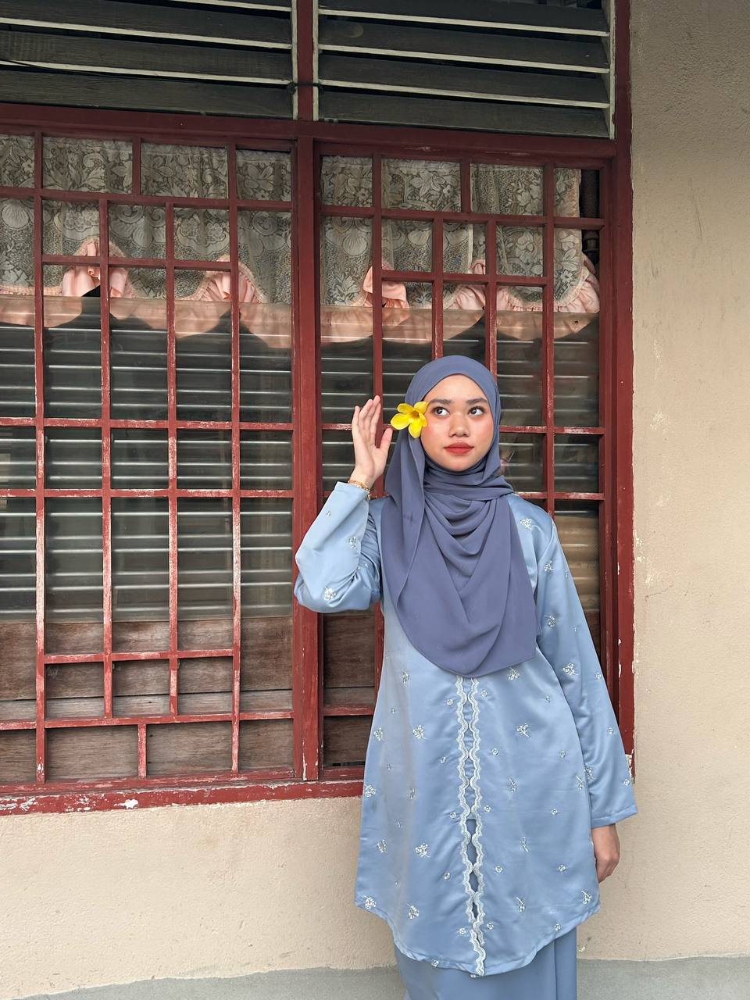
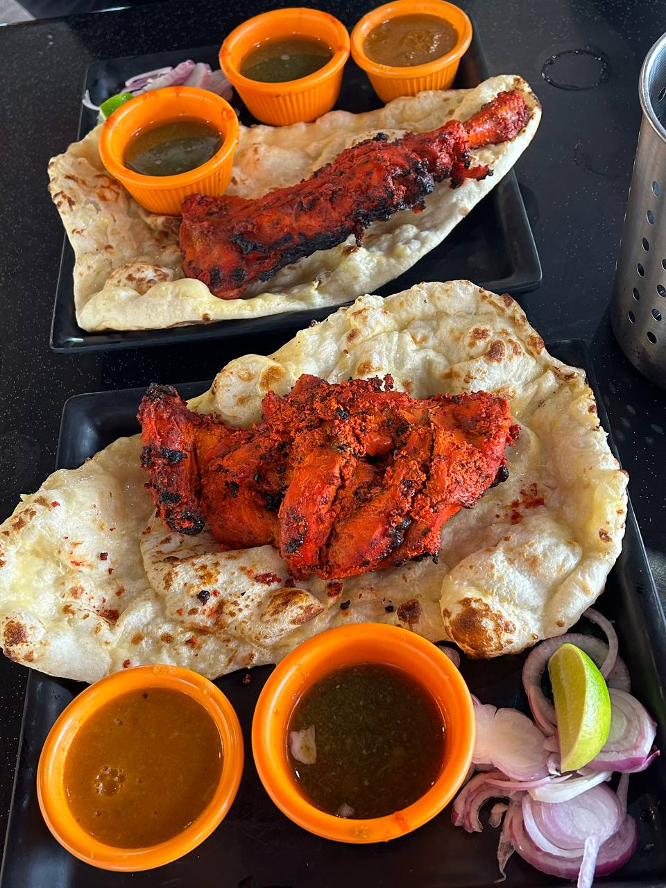
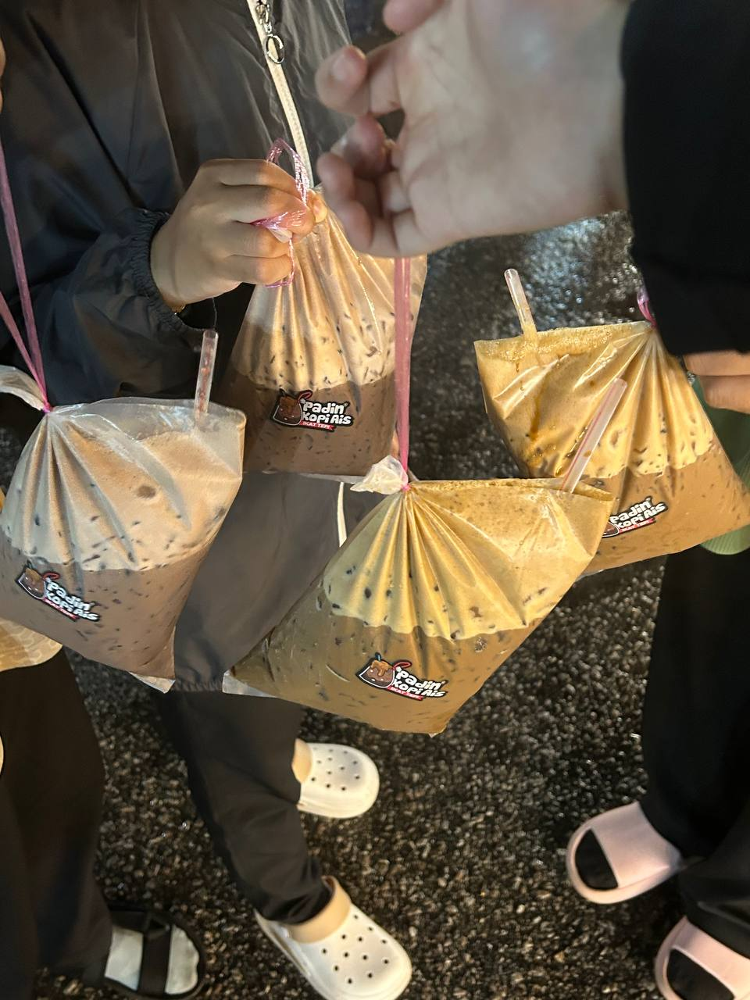

|  |
Name: Nureena Aleya Binti Rahim Age: 20 years old Date of Birth: 30 June 2005 Phone Number: 016-2413006 Email Address: nureenaaleya@gmail.com |
|  |
Position: In 2024, I held the position of Deputy Exco for Women's Affairs in the IMAN Club, UiTM Kedah Branch. |
|  |
Position: In 2025, I held the position of Exco for Women's Affairs in the IMAN Club, UiTM Kedah Branch. |
|  |
Favourite Colour: Blue, because it has a calming effect on the mind and body. It reduces stress and creates peace, making me feel relaxed and comfortable. |
|  |
Favourite Food: I love to eat chicken tandoori because of its rich, smoky flavour and the perfect blend of aromatic spices that make it tender and delicious. |
|  |
Favourite Drink: I love to drink coffee because it contains caffeine, which helps wake me up and gives me a boost of energy, especially in the morning or when I feel tired. |